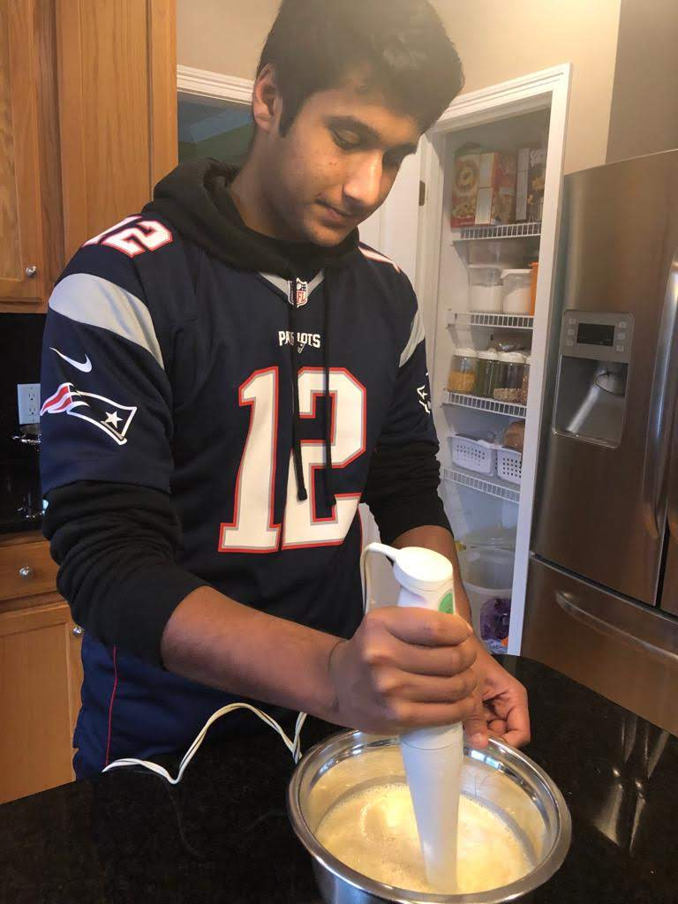

This class is taught by Mrs. Wildfong. Being the Advanced Spanish class, we are fully immersed in Spanish. What I mean by this is that we are encouraged to only speak Spanish. This class focuses on learning Spanish by practicing grammar and pronunciation through activities, and through Spanish media such as movies and songs. One unique thing about this class is that we continually add to our vocabulary notebooks daily, to further advance our Spanish vocabulary.
Each term, we are tasked with a writing assignment. These vary and improve along the year as we are introduced and well-practiced with different grammatical concepts. Our A-Term writing assignment was to right about a time when we were young. I wrote about a time when I traveled to India and how that affected me. If you would like to read my Spanish writing assignment, please click the heading above.
After Thanksgiving break during B-Term, all the juniors at MAMS are assigned to make a dish of their language (Spanish or French) and bring it into school for all to enjoy as a class. We are sectioned of to bring either appetizers, entrees, or desserts. I got to choose to make the desert Flan. After the giant potluck, we have to create a presentation, detailing how we made our dishes. If you would like to see my Flan presentation, please click the heading above.
